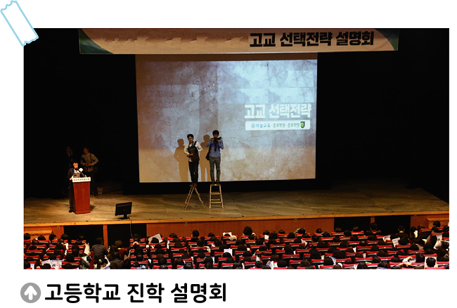

활동하기 사회통합 전형으로 보는 공정한 기회의 보장
● 자료 2에서 제시된 사회통합 전형 대상자를 분류한 기준을 찾아보고, 각 유형이 ‘사회통합 전형의 혜택을 보는 것이 정의로 운지, 정의롭지 않은지’ 나누어 보자

자료 1사회통합 전형이란 과학 고등학교, 국제 고등학교, 외국어 고등학교, 자율형 사립 고등학교 등의 입학 정원에서 일정 비율을 국 가적 보호가 필요한 가정의 자녀들을 선발하는 제도이다. 예를들어 ◯◯ 국제 고등학교의 경우, 입학 정원이 총 100명이라면, 그중 20명 을 의무적으로 사회통합 전형으로 선발하고 있다.
● 자료 2에서 제시된 사회통합 전형 대상자를 분류한 기준을 찾아보고, 각 유형이 ‘사회통합 전형의 혜택을 보는 것이 정의로 운지, 정의롭지 않은지’ 나누어 보자
자료2 사회통합 전형에서는 국가적으로 보호가 필요한 대상의 유형을 다음과 같이 분류한다.
|
기회균등 전형 |
기초 생활 수급자, 차상위 계층, 국가 보훈 대상자, 한 부모 가족 보호 대상자 |
|---|---|
|
사회 다양성 전형 |
다문화 가정의 자녀, 북한 이탈 주민, 특수 교육 대상자, 도서·벽지 출신, 아동 복지 시설 보호 아동 |
● 자료 2에서 제시된 사회통합 전형 대상자를 분류한 기준을 찾아보고, 각 유형이 ‘사회통합 전형의 혜택을 보는 것이 정의로 운지, 정의롭지 않은지’ 나누어 보자
| 정의롭다. | 정의롭지 않다. |
|---|---|
|
기초 생활 수급자 차상위 계층 국가 보훈 대상자 특수 교육 대상자 도서·벽지 출신 아동 복지 시설 보호 아동 |
한 부모 가족 보호 대상자 다문화 가정의 자녀 북한 이탈 주민 |